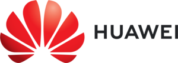

Submissions
Submission Site
Publication Date
The official publication date is the date the proceedings are made available in the ACM Digital Library or IEEE Xplore. This date may be up to two weeks prior to the first day of the conference. The official publication date affects the deadline for any patent filings related to published work. (For those rare conferences whose proceedings are published in the ACM Digital Library or IEEE Xplore after the conference is over, the official publication date remains the first day of the conference.)
Submitting your work
Paper submissions are due April 25, 2022. Please make sure that your paper satisfies all the following requirements before being submitted. Submissions not adhering to these submission guidelines will be rejected by the submission system and/or subject to an administrative reject.
-
The paper must have an abstract under 300 words.
-
The paper must be original material that has not been previously published in another conference or journal, nor is currently under review by another conference or journal. You may submit material presented previously at a workshop without copyrighted proceedings.
-
The submission is limited to ten (10) pages in the ACM 8.5" x 11" format (US letter size paper) using 9pt font, with no more than 7 lines per inch. This page limit applies to all content NOT INCLUDING references, and there is no page limit for references. Your paper must print satisfactorily on both Letter paper (8.5"x11") and A4 paper (8.27"x11.69"). The box containing the text should be no larger than 7.15"x9" (18.2cm x 22.9cm).
-
Anonymized supplementary material may be provided in a single PDF file uploaded at paper submission time, containing material that support the content of the paper, such as proofs, additional experimental results, data sets, etc. Reviewers are not required to read the supplementary material but may choose to do so.
-
Papers are to be submitted for double-blind review. Blind reviewing of papers will be done by the program committee, assisted by outside referees. Author names as well as hints of identity are to be removed from the submitted paper.
-
Use care in naming your files. Source file names (e.g., Joe.Smith.dvi) are often embedded in the final output as readily accessible comments. In addition, do not omit references to provide anonymity, as this leaves the reviewer unable to grasp the context. Instead, if you are extending your own work, you need to reference and discuss the past work in third person, as if you were extending someone else's research.
-
We realize in doing double-blind review that for some papers it will still be obvious who the authors are. In this case, the submission will not be penalized if a concerted effort was made to reference and describe the relationship to the prior work as if you were extending someone else's research. For example, if your name is Joe Smith:
"In previous work [1,2], Smith presented a new branch predictor for .... In this paper, we extend their work by ..."
Bibliography
- [1] Joe Smith, "A Parallel Architecture for ...," Proceedings of PACT 2004.
- [2] Joe Smith, "A Compilation Technique for ...," Proceedings of PACT 2005.
-
Your submission must be formatted for black-and-white printers and not color printers. This is especially true for plots and graphs in the paper.
-
Please make sure that the labels on your graphs are readable without the aid of a magnifying glass.
-
Please number the pages.
-
The paper must be submitted in PDF. We cannot accept any other format, and we must be able to print the document just as we receive it. We suggest that you use only the four widely used printer fonts: Times, Helvetica, Courier and Symbol.
Please submit your work via the paper submission site at https://pact22.hotcrp.com/.
Conflicts of Interest
To ensure a fair and high-quality reviewing process we ask ALL authors of a submitted paper to register their conflicts at the submission site. If a paper is found to have an undeclared conflict that causes a problem OR if a paper is found to declare false conflicts in order to abuse or game the review system, the paper may be rejected. Please declare a conflict of interest with the following people for any author of your paper. Do not limit yourself to only the PC members. A conflict occurs in the following cases:
-
Between adviser and advisee forever.
-
Between family members forever.
-
Between people who have collaborated in the last 5 years. This collaboration can consist of a joint research or development project, a joint paper, or when there is direct funding from the potential reviewer (as opposed to company funding) to an author of the paper. Co-participation in professional activities, such as tutorials or studies, is not cause for conflict. When in doubt, the author should check with the PC chair.
-
Between people from same institution or who were in the same institution in the last 5 years.
-
Between people whose relationship prevents the reviewer from being objective in his/her assessment. Service collaborations, such as co-authoring a report for a professional organization, serving on a program committee, or co-presenting tutorials, do not themselves create a conflict of interest. Co-authoring a paper that is a compendium of various projects with no true collaboration among the projects does not constitute a conflict among the authors of the different projects.
Artifact Evaluation
Authors of accepted PACT 2022 papers are invited to formally submit their supporting materials for Artifact Evaluation. Submission is voluntary. The Artifact Evaluation process is run by a separate committee whose task is to assess if artifacts supporting the work described in the papers are available and functional, and (some of) experimental results are reproducible.
We encourage authors to prepare their artifacts for submission and make them more portable, reusable and customizable using open-source frameworks including OCCAM, Docker, reprozip, CodeOcean and CK.
Papers that successfully go through the Artifact Evaluation process will receive a seal of approval printed on the papers themselves. Authors of such papers will have an option to include their Artifact Appendix to the final paper (up to 2 pages). Authors are also encouraged to make their artifacts publicly available, for example using the Code Ocean platform.
Important Dates and Deadlines
Conference Papers:
Abstracts: April 18, 2022Full Papers: April 25, 2022Round 1 Rebuttal: June 6–9, 2022Round 2 Rebuttal: July 11–14, 2022Author Notification: July 29, 2022Camera Ready Papers: August 26, 2022
Posters:
Poster Submission Deadline: September 1, 2022Author Notification: September 15, 2022Extended Abstract: September 29, 2022Poster Session: October 10, 2022
ACM Student Research Competition:
Abstract Submission Deadline: September 8, 2022Author Notification: September 16, 2022SRC Poster Session: October 11, 2022SRC Finalist Presentations: October 12, 2022
Application Deadline: October 5, 2022
Workshops and Tutorials:
- Workshops/Tutorials: October 8–9, 2022
Conference: October 10–12, 2022
Previous PACTs
- PACT21 (proceedings)
- PACT20 (proceedings)
- PACT19 (proceedings)
- PACT18 (proceedings)
- PACT17 (proceedings)
- PACT16 (proceedings),
- PACT15 (proceedings)
- PACT14 (proceedings)
Earlier PACTs
Sponsors
Platinum
Gold

Supporters